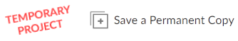
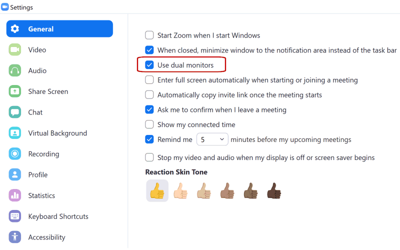

R for GIS.
BayGeo, Spring
2024
Computer
Setup
Computer Setup
The workshop includes a number of hands-on exercises so you’ll need a laptop or desktop computer (Mac or Windows are both fine). As described below, you can either install RStudio Desktop and a bunch of packages, or run RStudio in a browser using the RStudio Cloud platform. In either case, a mouse is recommended for navigating the interactive maps we’ll be creating. A second monitor is also strongly recommended (see more below).
RStudio Desktop is not a terribly big or computationally intensive program, however if your laptop is old and slow, consider using the RStudio Cloud service.
RStudio Cloud
A good way to complete the workshop exercises is to use RStudio Cloud. RStudio Cloud is a virtual environment that allows you to run R in a browser. If you use RStudio Cloud for the workshop, you won’t have to install and software or data because the instructor will prepare a virtual machine image that you can ‘clone’. It functions nearly identical to RStudio Desktop, and works pretty well as long as you have reasonably good internet connection. Using RStudio Cloud requires setting up an account (free).
To use RStudio Cloud for the workshop, login to your account and then click on this link:
https://posit.cloud/content/8108448
This will open a RStudio Cloud project with all the required packages and data ready to go (you’ll get the scripts from the slide deck during the workshop). After the project opens, click the ‘Save a Permanent Copy’ button in the toolbar, which will make a copy of the project in your own workspace.

RStudio Desktop
Alternately, you can install R and RStudio Desktop on your own computer. R is cross-platform, so Windows, Mac, or Linux should all work. R and RStudio Desktop are not large programs, but you should have 2Gb or more of free HD space (if your laptop is not sufficient consider using the RStudio Cloud option instead). Please install R, RStudio, and a number of packages as described below.
1. Download and Install R (64-bit):
Note: If you already have R installed, please make sure you have version 4.0 or later. If needed, you can update R by downloading the latest version from CRAN and (re)installing it.
2. Download and Install RStudio Desktop
Download and install RStudio Desktop for your operating system. The free version is fine.
https://www.rstudio.com/products/rstudio/download/
3. Install Packages
R packages are like add-ons - they expand the capabilities of R. To install the packages for the workshop, run the following lines of code in RStudio (You can click the little copy button in the green text box below, then open RStudio and paste the commands into the console and hit enter). An internet connection is required.
## Required packages
pkgs_req <- c("sf", "leaflet", "tmap", "tmaptools", "leaflet", "ggmap",
"RColorBrewer", "raster", "maps", "tidyverse", "jsonlite",
"rasterVis", "nngeo", "lwgeom", "remotes",
"conflicted", "tigris", "tidycensus", "stars",
"googlesheets4", "httr", "rjson", "usethis", "rinat",
"ggspatial", "rosm", "ggimage", "wrkshputils", "palmerpenguins", "here",
"terra")
## See which ones are missing
(pkgs_missing <- pkgs_req[!(pkgs_req %in% installed.packages()[,"Package"])])
## Install missing ones
if (length(pkgs_missing)) install.packages(pkgs_missing, dependencies=TRUE,
repos = c(getOption("repos"), 'https://ajlyons.r-universe.dev'))
## Install GitHub Packages
remotes::install_github("yonghah/esri2sf")
remotes::install_github("Chicago/RSocrata")
## Re-run the check for missing packages
pkgs_missing <- pkgs_req[!(pkgs_req %in% installed.packages()[,"Package"])]
if (length(pkgs_missing)==0) cat("ALL PACKAGES WERE INSTALLED SUCCESSFULLY \n")
##########################################
## TIPS
##
## If you are prompted by the question, 'Do you want to install from sources the
## package which needs compilation?', select 'No'.
##
## If you get an error message that a package can't be installed because
## it's already loaded and can't be stopped, restart R (Session >> Restart R),
## and try again.
##
##########################################
4. Download the Workshop Materials
The workshop slides, exercise notebooks, and data are all on GitHub (~170 Mb). You can download them to your computer by running:
usethis::use_course("ajlyons/rspatial_bgs24")
Alternately, you can go to the GitHub Repo and click the green ‘Code’ button. Remember to unzip the file to your hard drive in a location of your choice. Double-click the rspatial_bgs24.Rproj file to open the workshop materials in RStudio.
Note that the slides and notebooks will continue to be updated throughout the course. If you’d like to keep a copy of the workshop materials for posterity, plan on downloading it again a week or two after the final session.
Setting up Your Workspace
Try to find a spot which is comfortable and relatively free from distractions and background noise. Some people find a pair of headphones helps minimize distractions.
Ergonomics are important! If you’ve ever tried to work on a laptop while sitting on a couch for multiple hours, it isn’t ideal! We will take at least one short bio-break each session.
A second screen is extremely helpful, especially for hands-on workshops where you’ll be working through a software exercise. With a second screen, you can view the instructor’s slides or demo on one screen, and open RStudio on the other.

Connecting an external monitor to your computer is the best option for completing hands-on software workshops in Zoom
Slides and Exercises
Slides will be added to the course website before each session. The slides will be in HTML format, so you can follow-along online, or view them as the instructor presents them on Zoom. Practice exercises will mostly be in R Notebooks, that you’ll have to open in RStudio and complete. More info and links will be provided during the workshop.
Zoom
This workshop will be taught entirely online using the Zoom platform (the link will be sent you via email).
Use the Zoom Client
Although you can join Zoom meetings through a browser, we recommend installing the Zoom Client (App) for Meetings. You may already have it if you’ve used Zoom before, and you see it in the Start Menu (Windows) or Finder (Mac). Please make sure you have the latest version, as some of the buttons and features may have changed.

Check
for updates on the Zoom app
A Zoom account is not required. A webcam is not required.
Managing Zoom Audio
If you find your Zoom audio is garbled, perhaps due to poor bandwidth, you can dial-in with a phone. Click the microphone button on Zoom for details. In that case, you should disconnect from the the audio on your laptop or tablet (to prevent echo).
Muting and unmuting yourself are
essential skills for Zoom. It’s generally good practice to stay muted
until you have something to say. If you’re using the Zoom app on
Windows, click the microphone button. If you’re using the Zoom app for
phones and tablets, tap the middle of the screen to make the controls
visible. If you dial-in on a phone, you can use the ‘mute’ button on
your phone app, or dial *6 to mute or unmute yourself.
Viewing RStudio and Zoom Simultaneously
Dual Monitors (Best Option)
If you have an external monitor for your laptop / computer, you’re all set. (Tip: turn on Zoom’s dual monitors option, see below). Many TVs can be used as a second monitor depending on the video connections.
If you don’t have a second monitor, a tablet may come in handy for viewing the slides / speaker. The Zoom App is available for all major tablets and phones.
Note however if you watch the slides on a tablet, you should also have Zoom running on your laptop so you can take the polls, click on links in the chat window, share your screen with the instructor, etc. In that scenario, you’ll be logged into the Zoom meeting on two different devices, but only join the audio on one of the devices otherwise you may get a lot of echo!
Tips for Using Zoom on a Single Screen
Tip 1. Turn on ‘Dual Monitors’
The Zoom client for Windows has a ‘Dual Monitors’ option that will open up screen shares in a separate window. You don’t actually need two monitors. This option is really useful on a single monitor, because you can move and resize the screen share window anywhere you’d like (and even ‘pin’ it to stay on top, see below).
To turn on Dual Monitors, click the gear icon (Settings) in the Zoom client, then check ‘Dual Monitors’.


Tip 2. Place Windows Side-by-Side
You can arrange your windows so that you see both RStudio and Zoom side-by-side (see below for example). You can devote the entire width of the Zoom window to the screen share by going to ‘View Options’ and making sure side-by-side mode is turned off.
A keyboard shortcut on Windows to move windows to the left or right is windows key + left/right arrows. You can then choose which of the remaining windows to put in the other half of the screen. By default, Windows will divide the screen into equal halves, but if you resize the width right after you use the shortcut, it will remember the setting.
Arranging RStudio and Zoom side-by-side on a single monitor on Windows
Tip 3. Use a Utility to Keep the Zoom Window on Top
Surprisingly Zoom does not have an ‘always on top’ mode, but you can keep the Zoom client on top by using a 3rd party utility. Windows users can check out DeskPins, and Mac users can try Rectangle.
Example: Deskpins
In conjunction with Zoom’s Dual Monitor options, DeskPins let you ‘pin’ Zoom’s window with the presenter’s screen share on top, so you can watch the presenter’s demo while also working in your GIS program. Pinned windows can still be resized and moved around, so it doesn’t get in the way of what you’re working on.

To ‘pin’ a window, right-click on the DeskPins icon in the system tray, and select ‘Enter Pin Mode’. To ‘unpin’ a window, simply click the little ‘x’ button that appears when you hover over the pushpin icon.
Tip 4. Use Sticky Notes
If you like to take notes during Zoom meetings, a Sticky Notes utility can help. Almost all sticky notes programs have an option to stay on top, so you don’t have to worry about your notes disappearing. Windows has a built-in ‘Sticky Notes’ app, but an even better one is Stickies from Zhorn Software.
Sharing Your Screen
If needed, you can share your RStudio window with an instructor during an exercise to get help. Click the ‘Share Screen’ button on Zoom, and select your RStudio window. (Note: please don’t share the entire screen to avoid accidentally sharing other windows!)